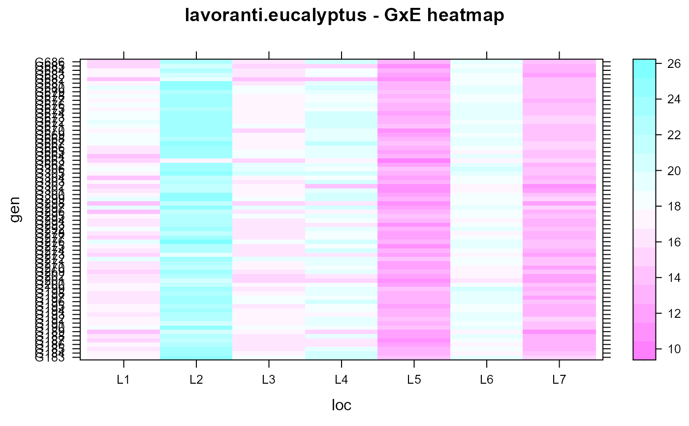

lavoranti.eucalyptus.RdHeight of Eucalyptus trees in southern Brazil
A data frame with 490 observations on the following 4 variables.
gengenotype (progeny) factor
originorigin of progeny
loclocation
heightheight, meters
The genotypes originated from three different locations in Queensland, Australia, and were tested in southern Brazil. The experiment was conducted as a randomized complete block design with 6 plants per plot and 10 blocks. Mean tree height is reported.
The testing locations are described in the following table:
| Loc | City | Lat (S) | Long (W) | Altitude | Avg min temp | Avg max temp | Avg temp (C) | Precip (mm) |
| L1 | Barra Ribeiro, RS | 30.33 | 51.23 | 30 | 9 | 25 | 19 | 1400 |
| L2 | Telemaco Borba, PR | 24.25 | 20.48 | 850 | 11 | 26 | 19 | 1480 |
| L3 | Boa Experanca de Sul, SP | 21.95 | 48.53 | 540 | 15 | 23 | 21 | 1300 |
| L4 | Guanhaes, MG | 18.66 | 43 | 900 | 14 | 24 | 19 | 1600 |
| L5 | Ipatinga, MG | 19.25 | 42.33 | 250 | 15 | 24 | 22 | 1250 |
| L6 | Aracruz, ES | 19.8 | 40.28 | 50 | 15 | 26 | 24 | 1360 |
| L7 | Cacapva, SP | 23.05 | 45.76 | 650 | 14 | 24 | 20 | 1260 |
Arciniegas-Alarcon (2010) used the 'Ravenshoe' subset of the data to illustrate imputation of missing values.
O J Lavoranti (2003). Estabilidade e adaptabilidade fenotipica atraves da reamostragem bootstrap no modelo AMMI, PhD thesis, University of Sao Paulo, Brazil.
Arciniegas-Alarcon, S. and Garcia-Pena, M. and dos Santos Dias, C.T. and Krzanowski, W.J. (2010). An alternative methodology for imputing missing data in trials with genotype-by-environment interaction, Biometrical Letters, 47, 1-14. https://doi.org/10.2478/bile-2014-0006
# \dontrun{ # Arciniegas-Alarcon et al use SVD and regression to estimate missing values. # Partition the matrix X as a missing value xm, row vector xr1, column # vector xc1, and submatrix X11 # X = [ xm xr1 ] # [ xc1 X11 ] and let X11 = UDV'. # Estimate the missing value xm = xr1 V D^{-1} U' xc1 data(lavoranti.eucalyptus) dat <- lavoranti.eucalyptus libs(lattice) levelplot(height~loc*gen, dat, main="lavoranti.eucalyptus - GxE heatmap")dat <- droplevels(subset(dat, origin=="Ravenshoe")) libs(reshape2) dat <- acast(dat, gen~loc, value.var='height') dat[1,1] <- NA x11 <- dat[-1,][,-1] X11.svd <- svd(x11) xc1 <- dat[-1,][,1] xr1 <- dat[,-1][1,] xm <- xr1 xm # = 18.29, Original value was 17.4#> L2 L3 L4 L5 L6 L7 #> 25.00 18.67 20.61 13.88 19.84 14.72# }